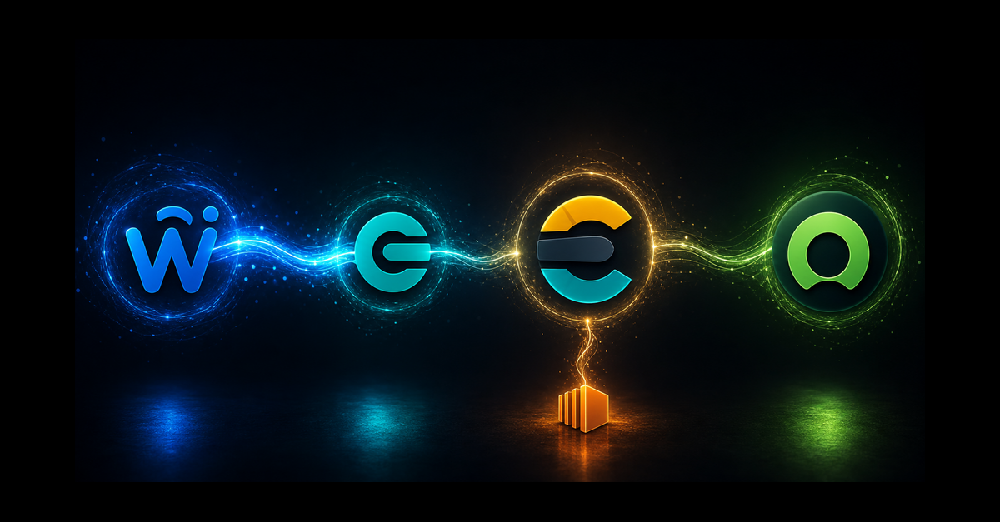
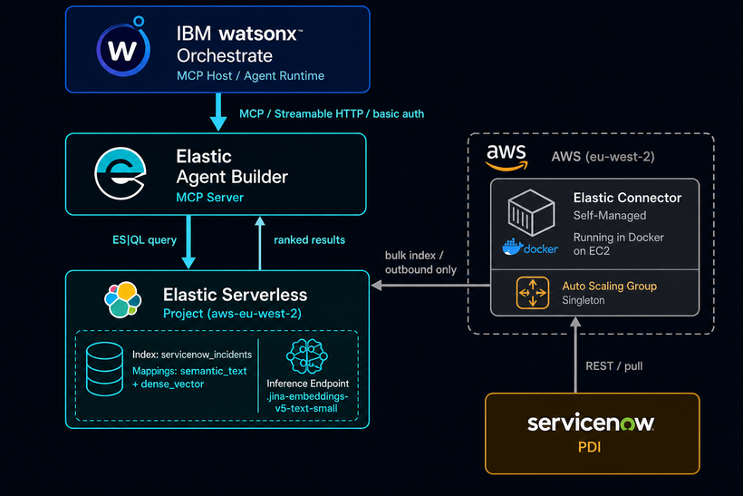
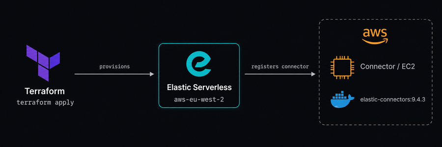
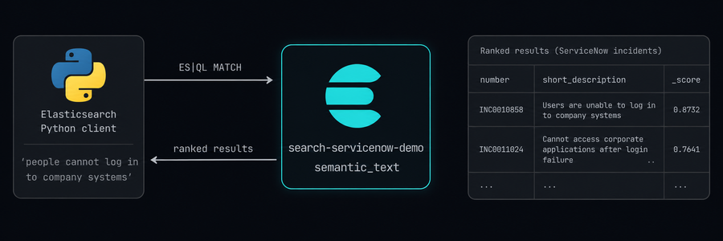
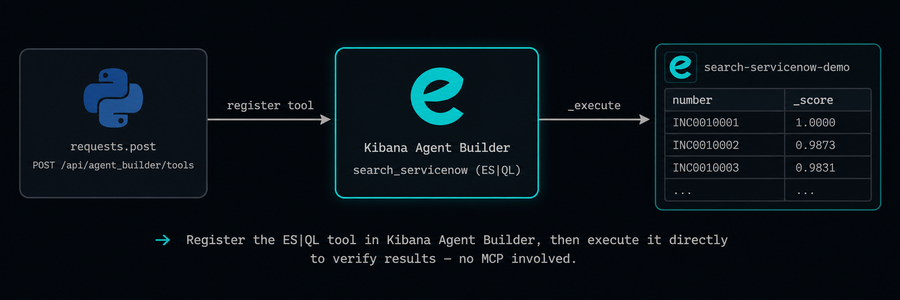
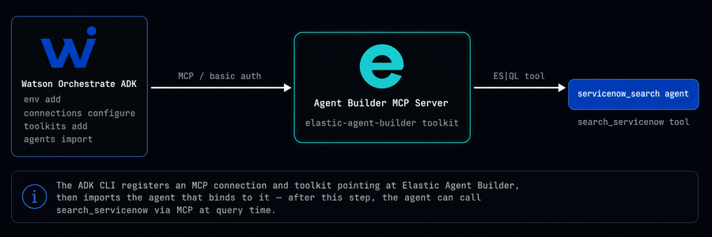
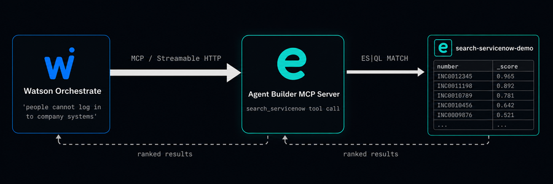

Natural-language search over ServiceNow — no keywords, no custom integration code.

semantic_text mappings
| Module | Creates |
|---|---|
| elastic_serverless | Elastic Serverless Elasticsearch project in aws-eu-west-2 |
| aws_network | Egress-only security group (TCP 443 out) on the default VPC — no inbound rules |
| connector_agent | EC2 launch template + singleton ASG; user_data runs the connector Docker image |
| servicenow_connector | Connector registration + config, index with semantic_text mappings, scoped API key |
One terraform apply builds everything; all outputs land in .env for the notebook. Teardown is one terraform destroy.
search-servicenow-demosemantic_text fields are vectorised automatically at index time by the .jina-embeddings-v5-text-small inference endpoint# trigger an on-demand full sync POST /_connector/_sync_job { "id": "$CONNECTOR_ID", "job_type": "full" } # poll until completed, then verify GET /search-servicenow-demo/_count → 46 documents indexed

FROM search-servicenow-demo METADATA _score | WHERE MATCH(short_description, ?query) OR MATCH(description, ?query) | SORT _score DESC | LIMIT 5 query = "people cannot log in to company systems"
The query shares zero keywords with the results — this is pure semantic ranking:
| number | short_description | _score |
|---|---|---|
| INC0009003 | Cannot sign into the company portal app | 1.6119 |
| INC0000046 | Can't access SFA software | 1.5302 |
| INC0010014 | Account lockout after directory sync discrepancy | 1.5265 |
| INC0000044 | Can't log into SAP from my laptop today | 1.5148 |
BM25 keyword search would miss every one of these.

search_servicenow as an ES|QL tool in Kibana Agent Builder via REST_execute — no MCP, no agent — to confirm hits and latency firstPOST /api/agent_builder/tools # register POST /api/agent_builder/tools/_execute { "tool_id": "search_servicenow", "tool_params": { "query": "…" } } → same 5 incidents, ranked identically

orchestrate connections configure -a elastic_mcp \ -k basic -u "$MCP_SERVER_URL" orchestrate toolkits add -k mcp \ -n elastic-agent-builder \ --transport streamable_http -t '*' orchestrate agents import -f agent.yaml
KIBANA_URL/api/agent_builder/mcp — Elastic's MCP serveragent.yaml binds the toolkit; instructions force tool use — the agent never answers from LLM knowledge
$ orchestrate chat ask --include-reasoning \
"people cannot log in to company systems"
🧠 Reasoning Trace
Step 1: Called tool
'elastic-agent-builder__search_servicenow'
Step 2: Tool responded → 5 incidents
Source & full walkthrough — github.com/joeywhelan/orchestrate-relay
Terraform modules · demo.ipynb · agent.yaml · ES|QL tool definition